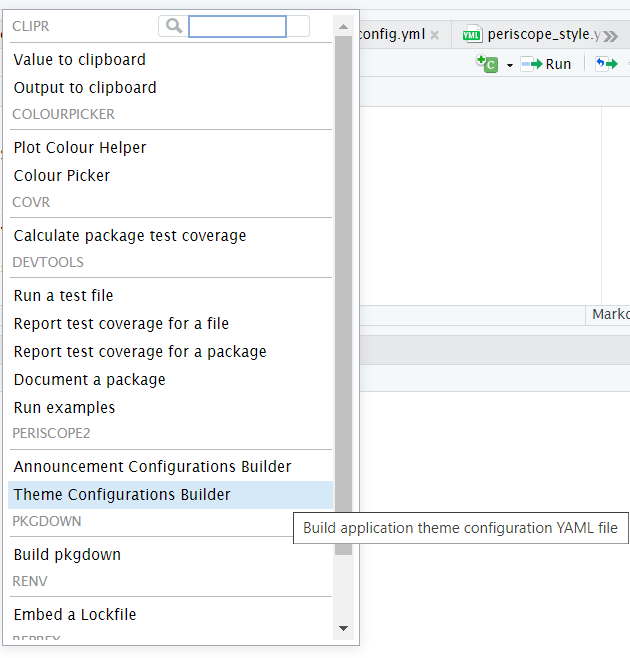
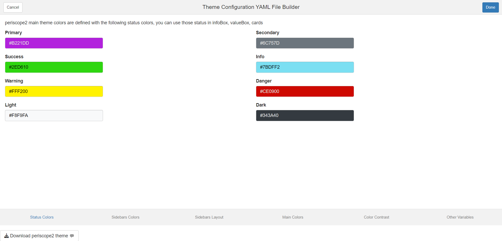
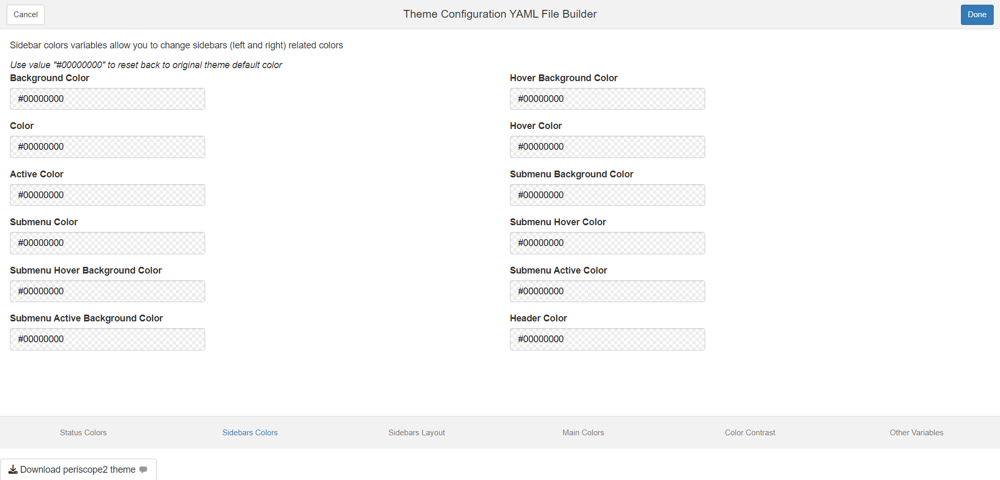
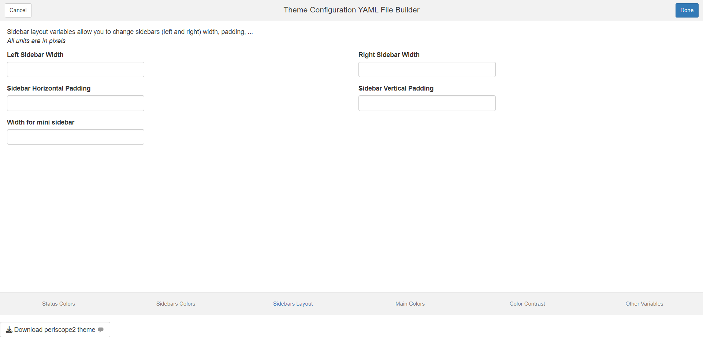
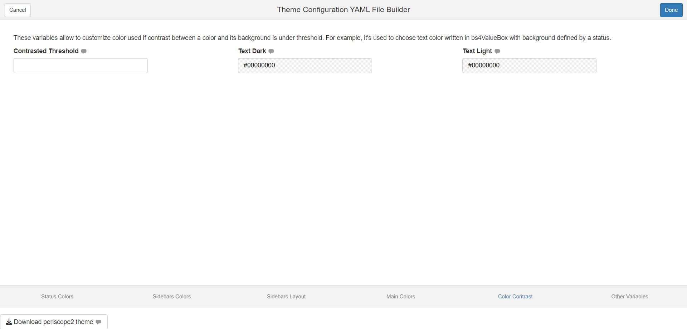
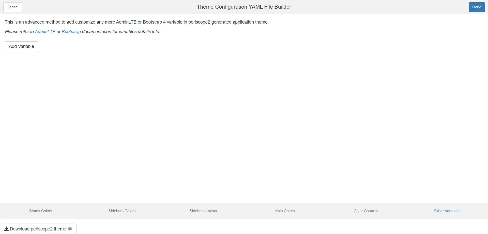
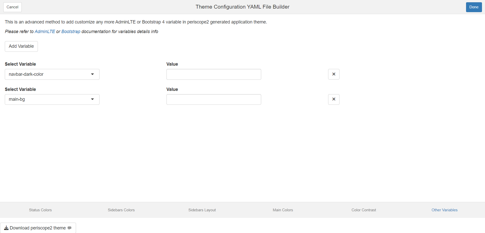
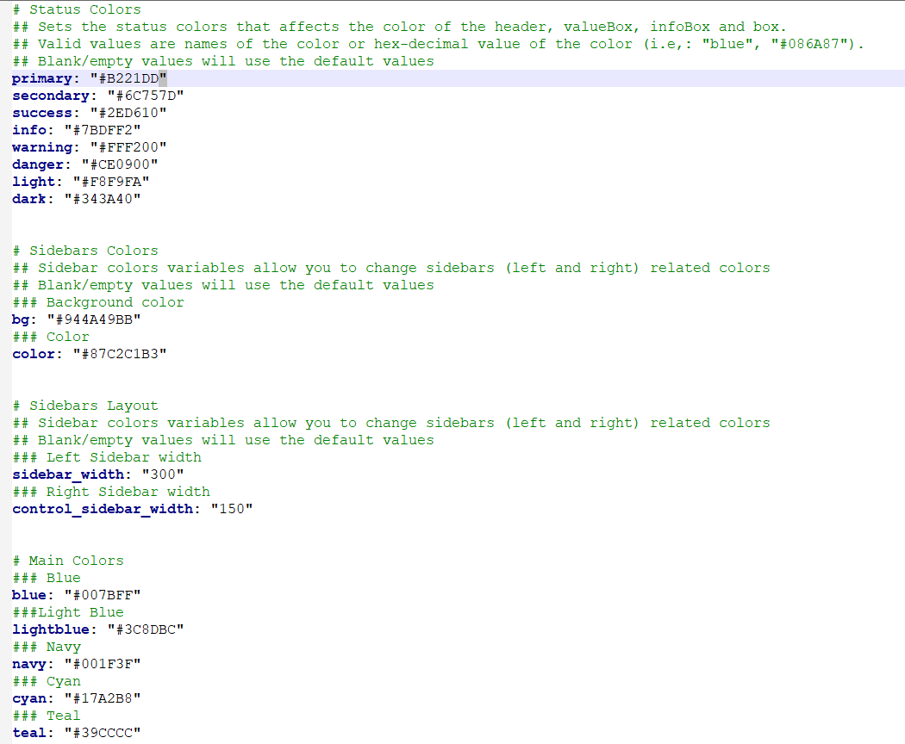

Theme Configuration Builder
Mohammed Ali
2026-08-05
Source:vignettes/themeBuilder_addin.Rmd
themeBuilder_addin.RmdAdd-in Launch
The add-in can be launched by one of two methods - Call
periscope2:::themeConfigurationsAddin() function from
within RStudio console - From RStudio add-ins menu

Add-in Layout
- The add-in will open as web browser tab
- Add-in UI consists of:
- Header
- Body
- Footer
- Add-in header that consists of:
- Cancel/Done buttons: they are default add-ins buttons and their sole
purpose is to close add-in window
- Upon Clicking on it, the widget add-in will be closed
- Done button functionality can be customized but that is not needed
in this add-in
- Upon Clicking on it, the widget add-in will be closed
- Add-in title between the two buttons is: “Theme Configuration YAML File Builder”
- Cancel/Done buttons: they are default add-ins buttons and their sole
purpose is to close add-in window
- Add-in body consists of 6 tabs:
- Status Colors
- Sidebar Colors
- Sidebar layout
- Main Colors
- Colors Contrast
- Other Variables
- Footer:
- Download button
- No mandatory fields
Status Colors Tab
periscope2 main theme colors are defined with the following status colors, you can use those status in infoBox, valueBox, cards

Sidebar Colors Tab
Sidebar colors variables allow you to change sidebars (left and right) related colors

Sidebar layout Tab
Sidebar layout variables allow you to change sidebars (left and right) width, padding, …

Colors Contrast Tab
These variables allow to customize color used if contrast between a color and its background is under threshold. For example, it’s used to choose text color written in bs4ValueBox with background defined by a status

Other Variables Tab
This is an advanced method to add or customize any more AdminLTE or Bootstrap 4 variable in periscope2 generated application theme.
- User can add variables to customize by clicking “Add Variable” button
- User can remove added variables by adding remove button for that variable
- User can search for the theme variable in the selectize input


Downloaded File
Name: periscope_style.yaml Format: Value are based on input configuration but output is similar to the following
